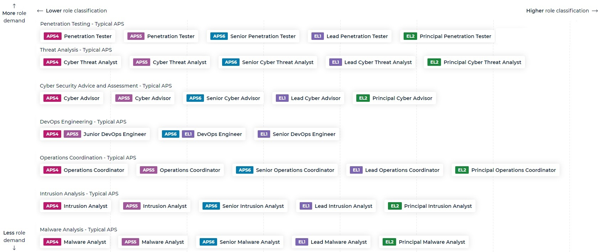
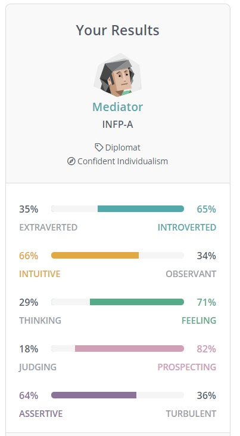
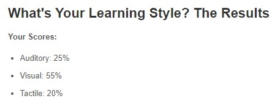
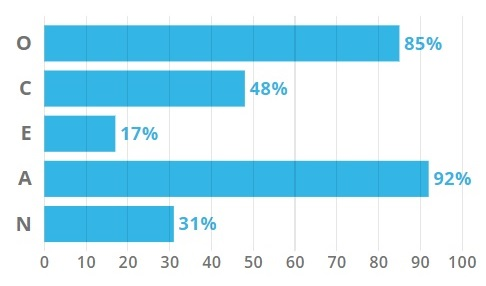
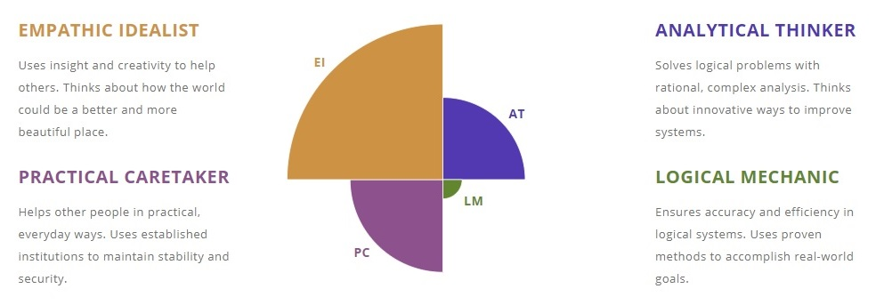

Jacob Conley - My Profile
Name: Jacob Conley
Student ID: s3583306
Email: s3583306@student.rmit.edu.au
Personal Information
I was born in Melbourne into a basic meat and three veg Australian family and spent
much of my life in the Northern suburbs.I am older currently 29 and reflecting
played sports (Football – AFL and Basketball) and had an interest in computers.
These two interests seemed to be constantly in competition in my younger years.
Competitive gaming kind of combined these two interests because I was not in love
with the sports I was playing, I was loving the competition. Naturally from there my
interest in IT grew rapidly faster than my interest in sports. Later I would find
a growing interest in drawing I began to have a deep interest in Software tools to create
I began my out of standard school years studying Graphic Design because I thought drawing and digital print media
was what I really wanted to do but during the year I found myself craving a more technical side. But life and
needing to survive got in the way I moved out of home at 19 only to go back when I was 22 when I got back home
I began to think about how I would continue my real interests and passions. I studied a certificate 4 in
Information Technology, and I was loving it.
Interests started to develop for more creation tools where I could then come across a new deeper interest
in Animation and games. I moved from the certificate for onto a Diploma in Interactive Media and was using
programs such as Maya, Adobe Creative Suite, Unity and Audacity. Unfortunately, during my Advanced Diploma in
Interactive Media life and needing to survive came from My parents wanting to sell the family home and move to
the country.
I went back to work and meet my girlfriend Belynda, a mother of 1 lovely child named Aiden life became about
family and making ends meet. Eventually I would have a child of my own with Belynda, A boy we named him Zander
and the past few years I have been living in the Western suburbs looking after Belynda, Aiden and Zander.
I was a stay-at-home dad because of my work was questionable during this pandemic. This was amazing as a gained a
great connection with My family and a deeper bond. Cooking is another new interest I developed over the past few
years I have begun to experiment with Slow Cooking, Pressure Cooking and diving into South-east Asian cuisine
like Indian and Thai.
Now is the time to continue to my development on studied interests. So, I have begun to study this course with the
thought of having the most job prospects as possible as well as continuing with my interest in Information Technology,
Computers, Software and applications to create and construct.
Interest in IT
My interest in Information Technology stems my interest in computers and applications I use.
Admittedly I had been focused of Front-end programs that I can use to create like Maya, Adobe C
reative Suite and Unity. IT also has allowed me to have a competitive outlet through online games mostly
League of Legends and Valorant.
Now, I am intrigued of how we use all forms of information technology and how it works as well as why for example Mobiles
and Computer using Wi-Fi in conjunction with infrastructure of Networks and Servers. As I have low level knowledge on the
technical side, I am trying to gather a knowledge base in order to be able to develop more problem-solving skills to have
my employers or my own technology to work optimally and safely.
Reflecting on my past, there has been a few key events why my interest in Information Technology the first time I really
began to like computers and problem solving relating to it was when I was Prep and somehow by sheer luck, I think I managed
to get one of the computers that was in the class to start working again just through tinkering around.
In Grade 6 I fixed the family computer that was riddled with viruses and implemented anti-virus software to make it safer.
From then on whether it was new peripherals, software or any technical query for the computer my family would ask me to
look at it and install it. Then explain how they can interact with the new technology.
In Year 10 I started competitively gaming on a PC or console and that stemmed an interest in animation and cool effects.
I would begin drawing and designing. I would use creation software programs beginning mostly with Adobe Illustrator and
Flash. Up until a few years ago where I added Maya and Unity to my repertoire as well as starting C++ programming language.
My experience with IT includes front end design programs, 3d animation programs, setting up home networks, Anti-Virus,
firewalls, securing the network, IT related hardware and equipment. Some work with an Arduino, limited and rusty coding
experience. This knowledge was gained throughout the years doing what I have mentioned above as well as previous education,
research and studies.
I chose RMIT to study as I am familiar with the university from doing my Interactive Media studies and I really enjoyed
doing it with RMIT. In the future I would like to know a variety of skills in order to be able to talk with all members
of my team in the workplace and truly understand what is needed to solve problems. As my ideal job requires a wide base of
knowledge as well as specific knowledge to implement changes.
My Ideal Job

After a lot of Research and consideration my ideal job would have to be a Cyber Security Specialist. This position requires
me to know the Policies and guidelines outlined by the Australian government to implement and advise on secure cyber
security prevention. Although at a much higher level this job appeals to me as it requires a large knowledge base of
procedures and policies to make informed and knowledgeable solutions for the defence of the agency information systems
while keeping in mind, they need effective delivery.
It appeals to my interest in research and problem solving while offering hurdles and challenges that I will have to
troubleshoot and work through with a cyber security team. I will need to conduct Testing, Investigation and Assessment
of external technology service providers and it seems I will also have a chance to educate people in the agency to
optimally adhere to Protective Security Policy Framework, Information Security Manual and ways to mitigate cyber incidents
in response to this assessment.
To achieve this, I first of all will need the ability to communicate with the agency as a whole as well the cyber security
team. This is important because it will make it easier to meet the security needs of the agency. I need the knowledge of
policies and guideline in this case (PSPF – Protective Security Policy Framework and ISM- Information Security Manual) in
order to Test and Assess if external technology is complying with them. This knowledge and the ability to communicate will
allow me to concisely inform staff of the agency how our procedure will help our information be effective and remain secure.
To achieve this, I first of all will need the ability to communicate with the agency as a whole as well the cyber security
team. This is important because it will make it easier to meet the security needs of the agency. I need the knowledge of
policies and guideline in this case (PSPF – Protective Security Policy Framework and ISM- Information Security Manual) in
order to Test and Assess if external technology is complying with them. This knowledge and the ability to communicate will
allow me to concisely inform staff of the agency how our procedure will help our information be effective and remain secure.
I will need knowledge of GRC (Governance, risk and compliance) and documentation associated with it. This is important as
it is like a three-tiered attack, (Kim Lindros, CIO, What is GRC and why do you need it, 2017) states that it ensures the
agencies operation is parallel with its goals. It makes sure risks are identified and managed. Finally, it certifies that
the agency meets laws and regulations of systems used and secures them properly. Fulfilling the documentation side
illustrates that these needs have been met in a physical report form. This role asks for this kind of approach from
within a Commonwealth government entity, I would assume this is due to familiarity with the entity would make it easier
to do.
I will also need NV1 clearance this requires me to go through a Vetting assessment through the Australian Govern Security
Vetting Agency (AGSVA) the process requires me to complete A security clearance package checklist which is needed so they
can do a full background check. Another skill will be the ability to analyse and assess a risk this can come from a variety
of different measures such as programming language knowledge all the way to performing risk assessments on data and
security measures.
At this time, I have extremely limited knowledge in terms of the skills I need for this job but I believe from past
knowledge of the ability to pick up new software and even programming languages to try and get this job in the future.
I do also however can communicate and work as a team. From past studies I have worked on large projects with others as
well as working in a workplace (Mostly Hospitality) where I must converse with colleagues and customers to do my job in
the best possible way.

Outlined above is an Australian Government Career pathfinder that I believe outlines a great way to have knowledge of GRC
from a Commonwealth government entity while entering my Ideal Job at a great entry point. I put in my interests, and it
is allows what it generated according to my interests versus role demand in the government. As you can see it suggests
entering for analyst, tester or advisory role. I believe it suggests these types of roles because it allows you to problem
solve and analyse in the cyber security space while obtaining the knowledge to advise appropriately.
I would like to get an APS (Australian Public Service) job so I can learn every day in an environment that reflects a
Commonwealth government entity firstly. If I were to choose, I would try Penetration Testing to gain knowledge on how to
conduct a vulnerability assessment or potential exploits. Learn how to do a Remediation Action Plan (RAP) and respond to
it for a variety of network, infrastructures, web applications, mobile devices and control systems as well as provide cyber
threat analysis and reports.
I would also maybe start from any of the analyst roles (Malware, Intrusion and Cyber Threat) as they would give me insight
on Threat/Risk Assessment and Modelling. Intrusion detection and analysis essentially learning how to monitor and warning
of a breach. How to conduct cryptographic research and forensics where I analyse evidence of a breach of policy or law and
presence of malware. All of these offers at least some insight into a least one attribute of My ideal job above which would
essentially, I’d apply for at least 5 years down the track.
Personal Profile




Through the results of these 3 tests there is a common thread of the fact I am an open-minded thinker that is empathic to
others. I am creative and imaginative first followed by helping people with practical thinking and analytical thoughts.
This means I can have original thought rather then mirror my colleagues but have the open-mindedness in order to address
their concerns and use research in order to solve the problems before us. I am more optimistic so I will try and test
solutions until it is solved. I also learn primarily visually so I try to visualize things that I hear, I write down key
words or ideas and colour code them accordingly.
When in a team this means my behaviour will be one of a good team member that tries to do my best to meet the needs of all
the members in the team it will mean that I was try and get the team to co-operate as much as possible. I feel I can be a
leader, but I think more in Ideas as I will not be assertive enough to narrow ideas or move away from others’ ideas which
would create much more work for everyone.
So would be more valuable as a team member in a team that has a good leader. I also create much more work for myself by the
way I learn because I actively try to commit the information to my memory by writing notes, noting key words or ideas and
colour coding them.
When creating a team, I should consider someone that can be assertive with critical thinking of all the ideas. They will
narrow our work because as reflected by Myers-Briggs test I tend to dream big and unrealistic so I will need someone to
reign that in. Otherwise as team of a team I can work well with most people due to the fact I empathetic to others. This
may also cause me to be more lenient towards deadlines of key milestone points in a project, so it is important that I have
someone assertive in the team.
Project Idea
My project idea will be a Public Toilet Locator App (Local Loo Locator – LLL) preferably on Apple and Android. It will use
existing geo-locational tools and a database of information associated to co-ordinates. This will allow a map of places
where public toilets to be created.
Furthermore, businesses that will allow the user to use the toilet whether they purchase an item and then have permission
or can just use the toilet without purchase may be able to be included to the created map. Potentially a way for small
business to advertise their business through the co-ordinate/map icon for example small special of day description as
business only automatically at top and highlighted above user added information.
(Squatty Potty, November 2019) states that People need to use the toilet while running or walking according to The
International SportMed Journal, 30 – 83% of runners reported experience gastrointestinal distress while running this is
thought to be because:
- The physical jostling of internal organs undigested food and liquids and increased muscle contraction in the
GI tract.
- Decreased blood flow to the intestines which is because blood is being diverted to muscles being used to run
or walk.
These factors contribute to needing a toilet with running or walking. The project would be useful for people in this
circumstance. They could search the area they are about to exercise in first to determine the best spot to stop for the
toilet. They could also find it in real time.
According to www.bladderandbowl.org an average person can use a toilet 4 – 10 times a day. That means in a 24-hour period
a person can be using the app up to 10 times a day likely to be the higher side if the person is in an unfamiliar area as
they would need to look where there is one more often.
“Where to buy” and “near me” mobile queries have grown by over 200% in the past two years. (Think with Google, 2019)
although through abstract way this offers a local business not only to advertise through the app targeted locally to a
local audience, It offers a marketing point that may make their business more attractive regardless if it is purchase to
use toilet or non-purchase. Getting people in the door is important especially for small business.
Geolocational mapping and a database per co-ordinate of a public toilet or business toilet. Local Loo Locator meets to
need of people needing to know where a toilet is on the go and supports local business.
Downloadable Databases:
The app will allow the user to download a database at different levels (World-wide, Country-wide and State-wide) which
allow a user to swap between mapping that they need where they are as well as control how much data they use, no point
having a Worldwide database of toilets if you remain in one state. This will easily place toilets with Google Maps
(Android) or Maps (Apple) integrated maps.
Set icons from each accessibility:
Accessibility Icons will be shown for each type of toilet (Disabled toilets, Male toilets, Female toilets, Unisex toilets
and Purchase/Non-Purchase needed) from there a user can press on the icon for information on the toilet. Comes with an easy
to distinguish key to separate these icons appropriately.
Business Information:
In the case of a business toilet there potentially could be information or advertisement for the business at the top of the
information. For examples specials listed like a local listing or classifieds.
Set icons for Extra facilities available:
Extras like (Parking access, Baby change table, Showers, Sharps disposal and Sanitary disposal) will have icons displayed
at the bottom of the extra information to inform users of other possible facilities. Comes with an easy to distinguish key
to separate these icons appropriately.
User-Added Information:
A user can help further by listing opening hours for each toilet.
User-Reporting process:
A user can report any incorrect places for a toilet and hours they are available. Also offer an email that they can contact
in order to have it fixed if report is actioned on quick enough.
Multiple Languages available:
As it will be a global app it will need multiple languages available in order to be useful for as many people as it can be.
To develop the app for Android and Apple we require the environments to do so for Apple it requires using X-Code. For
Android it requires using Eclipse. (Google Maps Platform) concludes to integrate Maps – The apple variant of Maps we will
need Maps SDK for iOS and Places SDK for iOS and for Google Maps we will need Maps SDK for Android and Places SDK for
Android.
We can use SQLite to create a database for all the information at the back end (an embedded database). We can use Adobe
illustrator to create vector icons for the accessibility and extra icons. We will need a PC in order to create all the
above with all the appropriate software.
We will need to have knowledge of either Objective-C and Swift programming language for the App Store release. We will
need to have knowledge of Java and Kotlin programming language for the Google Play Store release. It’s going to be hard to
find someone for all the languages and a database but in a professional setting this could easily be arranged.
(Apple Developer) states that We will need to follow App Store Review Guidelines, have a Product page that has (name, icon,
description. Screenshots, app previews and keywords), Present our privacy practices to apple and submit it for Apple.
(The Manifest, 2018) states to get an app on the Google Play Store we must first create a Developer Account which will cost
$25 if we plan to publish a paid app or sell in-app purchases we must link a Merchant account. After that we must create an
App through our Play Console. We then prepare a description, graphic assets, language and translations, categorise it, list
our contact details and make sure we have a privacy policy and have a URL linked to it from our app. We then upload our APK
file. We provide a content rating to ensure it hits the correct target audience and prevent removal from the Play Store. Set
up pricing and then Rollout the release.
If the project is successful, we will have two Apps one on Google Play Store and one on the App Store that help people
finding public toilets and businesses that will allow them to use the toilet via purchasing or just will let them. This
development will hopefully reduce the struggle of finding a toilet, reduce runners or walkers just going to the toilet in
nature and support local businesses by allowing them to advertise through like a local listing.